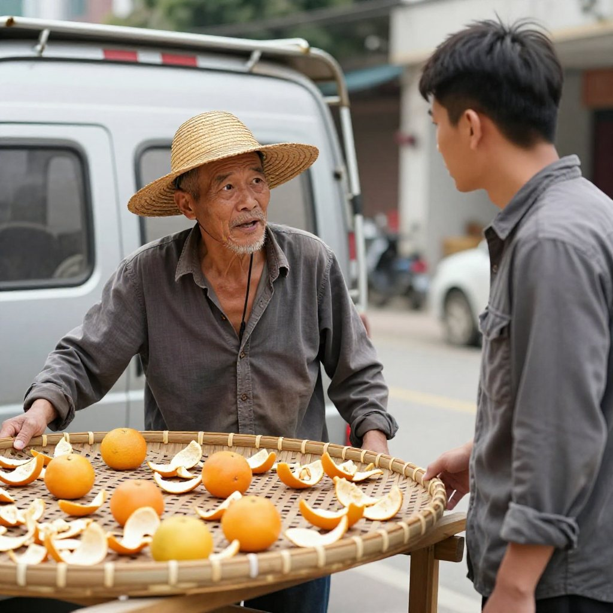
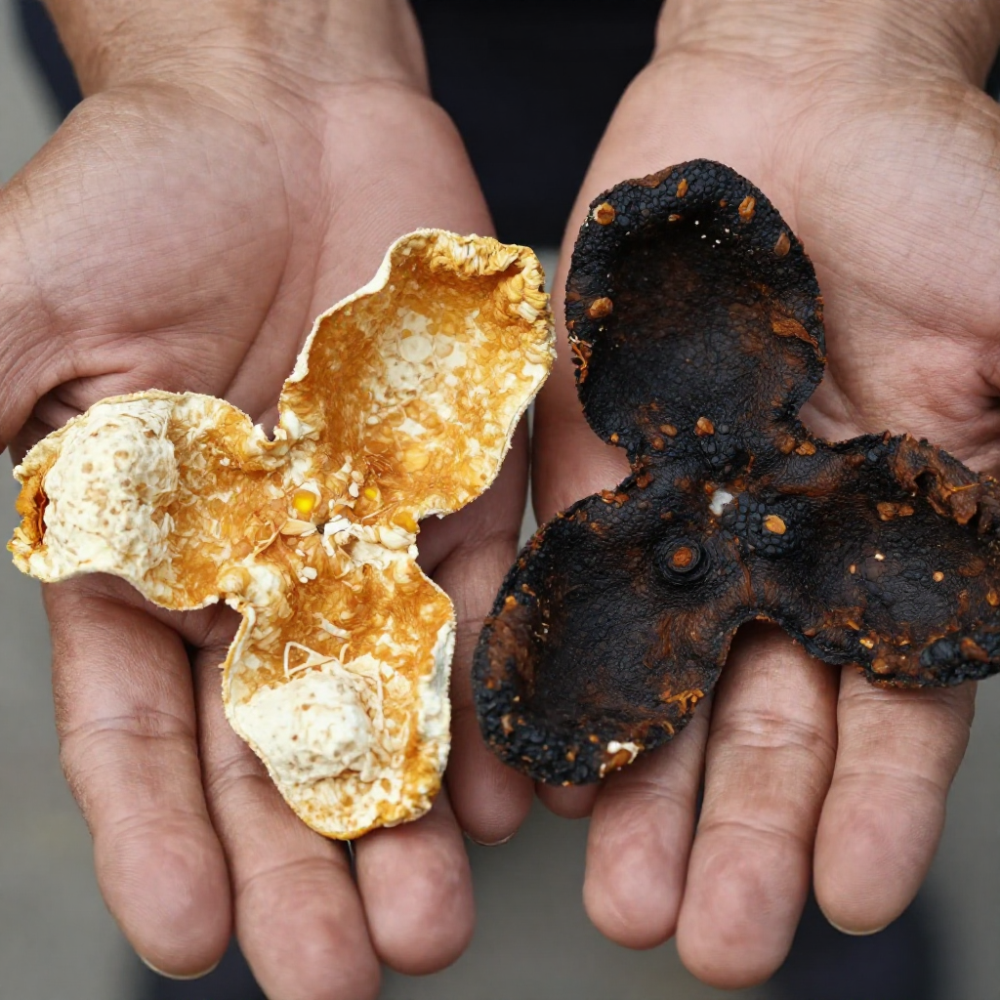
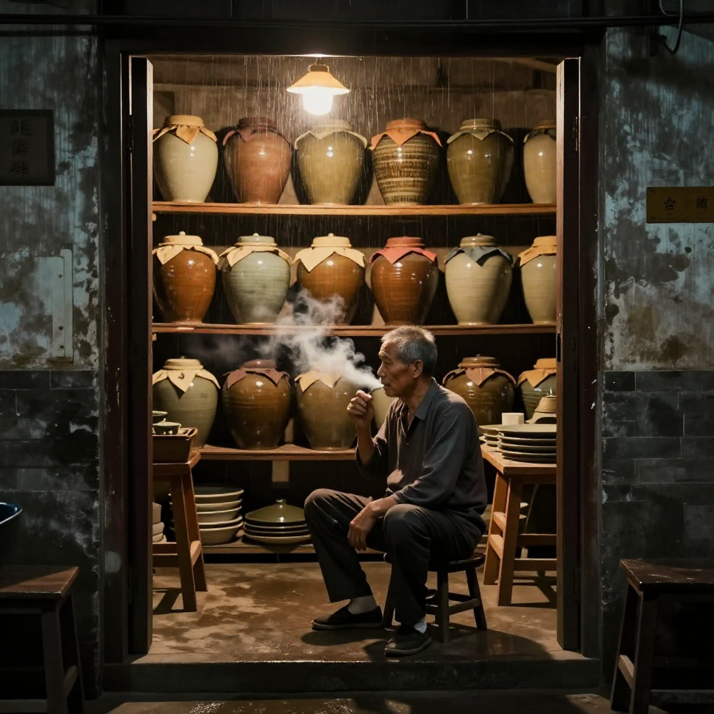

9月29日，央視網報道各地節前消費市場持續升溫，節日消費活力「熱辣滾燙」。同一天前後，江門發布轉發氣象消息：國慶假期前期，冷空氣將攜降雨來襲，江門市氣象台預計9月30日至10月1日局部有陣雨。新會陳皮村的曬場上，這兩條消息撞在了一起。
滢滢姐今早六點就被吳小姐的電話吵醒，說的還是同一件事：冷空氣今晚就到江門，曬場上還鋪着三百多斤新皮，收不收？滢滢姐趿着拖鞋就往陳皮村村口的曬場跑，老遠就聽見周伯在跟人吵，嗓門大得把果園裡的鳥都驚起來了。
一、曬場上的爭執：烘房兩天出「三年老皮」？

跟周伯吵架的，是開了輛小貨車來的李老闆。這人滢滢姐認得，前兩年就來新會收過皮，不講究產區不講究年份，專挑便宜的新皮，一車拉走。
「國慶假期遊客馬上湧進陳皮村了，我要現貨。果園裡剛開出來的大紅皮有多少要多少，不用等天曬，直接拉到我烘房裡高溫一烘，第二天就能當三年老皮賣，價格比你們正常收還高兩成。」
周伯當場就炸了。周伯今年六十二，在銀洲湖邊、三江交匯這片果園裡曬了四十多年皮，是滢滢姐作坊裡資格最老的工藝師傅。他指着曬場上的竹箕說，昨天剛開的皮，水汽還沒走透，這時候下烘房高溫一催，皮是乾了，可那股柑香也燙死了，以後放十年都是死的，聞着一股火氣。
「你嗰啲叫做出皮，唔叫陳皮。我喺呢個曬場曬咗四十幾年，未見過有人可以兩日曬出三年皮。」
「遊客懂什麼？顏色深一點、聞着香一點就行了，國慶七天賣完就走。」
滢滢姐站在中間，話說得很慢。
「李老闆，咱們新會陳皮的名聲，就是被這種速成皮搞壞的。消費信任這東西，毀一次就很難回來——節前大家都在說消費要升溫，可升溫靠的是好東西，不是靠糊弄人。」
二、兩片皮擺上竹箕：自然生曬與烘房皮怎麼分

這時候張先生一家正好從作坊那邊逛過來。張先生是廣州的老熟客，每年國慶都提前帶着老婆孩子來江門逛陳皮村，今年正好撞上。
「哎，我上個月在網上就買到過這種皮，說是五年陳，回來一泡又苦又澀，內囊還發黑。」
周伯一聽來勁了，抓起兩片皮就遞過去，滢滢姐也跟着搭話。
「你看自然生曬的老皮，內囊是自然脫落的，顏色是豬鬚紋的黃白相間，捲起來硬中帶韌，聞着是沉沉的柑香混着陳香。烘房催出嚟嗰啲呢，顏色一色黑沉，一聞一股焦火味，泡出嚟湯色渾。」
「難怪家裡的皮總不對味。我以前只當是自己不會泡。」
滢滢姐補了一句：分辨速成皮，最靠得住的是兩件事——一聞有無焦火氣，二泡看湯色透不透。真正自然生曬的新會陳皮，湯色是清亮的琥珀色，不是濁的。
三、收，還是不收？吳小姐的擔心
李老闆被說得臉上掛不住，放話說你們不賣有的是人賣，轉身就要去別家果園問。吳小姐有點慌，悄悄扯滢滢姐的袖子。
「姐，人家出價高兩成呢。冷空氣來了，萬一返潮發霉，損失更大。」
「黐線先賣。冷空氣來之前搶收回倉，勤翻勤看，寧可今年少賣一點，也不能把沒曬透的皮賣出去，更不能讓佢流到烘房裡去害人。」
周伯聽了這話，臉色才緩下來，蹲下去一張一張摸竹箕上的皮，嘴裡念叨：今晚風一倒，銀洲湖那邊的水汽就上來了，這些皮啊，都是三江交匯的泥水、日頭養出來的，不能毀在這一烘上。
四、五個人忙到天黑：陳皮村靠「死板」兩個字值錢

一下午，五個人在曬場上忙到天黑。周伯負責看皮，哪張要翻面、哪張要先收，他說了算；吳小姐和兩個阿姨裝袋、記年份；張先生一家也沒閒着，孩子幫忙遞袋子，張先生幫着搬。
李老闆的小貨車最後空車走的，走之前還搖下窗說，你們這樣做生意太死板。滢滢姐笑了笑沒接話，滢滢姐心裡清楚，陳皮村這三個字，靠的就是死板二字才值錢。
天擦黑的時候，第一滴雨點子落下來，曬場剛好收空。周伯坐在作坊門口點了根煙，說了句，明天開倉，給張先生看那罈放了五年的東甲皮。張先生眼睛一下就亮了。
「明天那罈皮的故事，比今日這場吵架仲精彩。國慶嚟村裡玩嘅朋友，有口福喇。」
常見問題
國慶來新會陳皮村買皮，怎麼避開速成烘乾皮？認準自然生曬、敢給你看曬場和作坊的店家。內囊發黑、一聞有焦火味的，多便宜都別拿；泡出來湯色渾濁的，也別留。
冷空氣、回南天會影響陳皮嗎？會的。新皮沒曬透遇潮容易發霉，所以滢滢姐家冷空氣前一定搶收回倉；老皮則越陳越要定期翻曬檢查，江門濕度大，一年兩次翻曬是底線。
大紅皮和青皮有什麼區別？青皮苦澀偏行氣，適合年輕人偶爾泡飲；大紅皮性溫、香甜醇厚，國慶前後上市，最適合日常煮茶、煲湯，全家都能喝。
三年皮和五年皮怎麼選？日常喝選三年，香氣足、價格實在；送長輩、收藏選五年以上，陳香更沉，湯更滑。
在新會、江門哪裡能買到正宗本地皮？來新會陳皮村南門牌坊G04找滢滢姐，當面看皮、免費試喝；廣州、港澳、東南亞的朋友都能郵寄。
新皮買回家怎麼存放？密封、陰涼、離地離牆，每年國慶前後、清明前後各翻曬一次，玻璃罐加食品級密封袋最穩妥。
結語
雨落下來的時候，曬場剛好收空。周伯說，做陳皮跟做人一樣，急不得——你今日省下的那兩天太陽，客人十年後一泡就喝出來了。
想親眼看一次自然生曬、聞一次剛翻面的新皮，國慶來新會陳皮村南門牌坊G04找滢滢姐坐坐，店裡常年備着熱茶。想看真假辨別的完整四招，翻翻這篇《四招教你辨別新會陳皮真假》；想了解今年採收季和標準化的進展，看這篇《陳皮熱點日報：新會柑採收季臨近，產業標準化提速》。
下期預告：周伯那罈放了五年的東甲老皮，到底什麼來頭？張先生開倉聞到的第一縷香，把整個作坊都鎮住了——下期滢滢姐帶你開倉看五年皮。